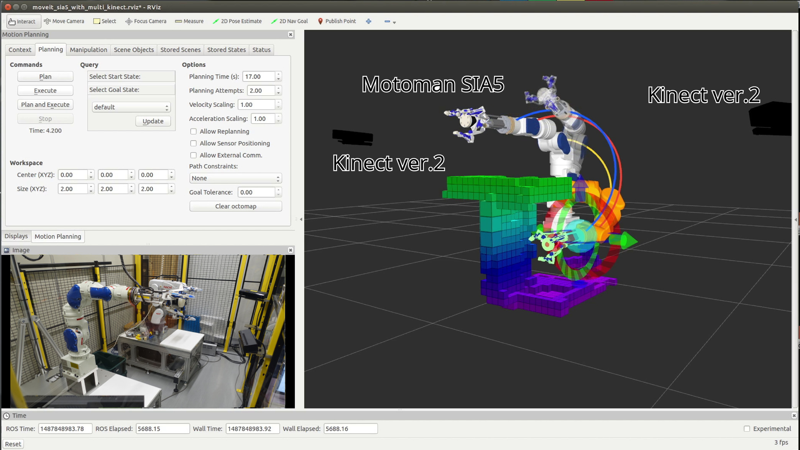

このページの作り方¶
このWebページは、Sphinxと呼ばれるPythonで書かれたドキュメント生成ツールを使ってかかれています。以下に作成方法を記述します。
インストール¶
このページを編集するための環境を整える．
sudo apt-get install python-pip
sudo apt-get install python-setuptools
sudo pip install sphinx commonmark recommonmark==0.4.0
sudo pip install sphinx_rtd_theme
sudo pip install sphinx-autobuild
編集用のプロジェクトをクローン¶
git clone git@github.com:ntl-ros-pkg/ntl-ros-pkg-doc.git
cd ntl-ros-pkg-doc
sudo cp tmp/parser.py /usr/local/lib/python2.7/dist-packages/recommonmark
デプロイ用のリポジトリをクローン¶
cd ntl-ros-pkg-doc
mkdir build
cd build
git clone git@github.com:ntl-ros-pkg/ntl-ros-pkg.github.io.git html
ページを作る¶
source/pagesに.mdファイルを作成．
.. toctree::
:maxdepth: 2
pages/test.md
pages/test2.md
のようにインデックスに追加しておく．
コンパイル¶
make livehtml
で.mdに変更があると自動的にコンパイルしてくれるようになる．
そのあとhttp://localhost:4000にアクセス・
うまく動かない場合は
make html
を普通に実行してみる．
サイト更新¶
cd build/html
git add -A
git commit -m "000_test.mdの追加"
git push
文法¶
コード¶
def function():
return True
画像¶

動画¶
数式¶
警告
レスポンスデザインが崩れるので使用は最小限に
係数を比較すると\(\beta_0 = K_E\)，\(\beta_1 = \displaystyle\frac{JR_a}{K_T}\)，\(\beta_2 = \displaystyle\frac{JL_a}{K_T}\)となる． 実際の値を計算すると，\(\beta_0 = 8.50\)，\(\beta_1 = 0.176\)，\(\beta_2 = 3.53\times10^{-3}\)となった．
\[\begin{split} Y(s) & =& P(s)\left\{\frac{K_i}{s}(R(s)-Y(s))-F(s)Y(s)\right\}\nonumber \\
\left\{1 + P(s)\left(\frac{K_i}{s}+F(s)\right)\right\}Y(s) & = & \frac{K_iP(s)}{s}R(s)\nonumber \\
\frac{Y(s)}{R(s)} & = & \frac{\displaystyle\frac{K_iP(s)}{s}}{1 + P(s)\left(\displaystyle\frac{K_i}{s}+F(s)\right)}\nonumber \\
\frac{Y(s)}{R(s)} & = & \frac{1}{1 + \displaystyle\frac{s}{K_i}\left(\displaystyle\frac{1}{P(s)}+F(s)\right)}\nonumber \\
T(s) & = & \frac{Y(s)}{R(s)} = \frac{1}{1 + \displaystyle\frac{s}{K_i}\left(\displaystyle\frac{1}{P(s)}+F(s)\right)}
\end{split}\]
箇条書き¶
- Mark
- ダウン
- だよ
rstの使えそうなやつ¶
-
class
recommonmark.transform.AutoStructify(document, startnode=None)[ソース]¶ ベースクラス:
docutils.transforms.TransformAutomatically try to transform blocks to sphinx directives.
This class is designed to handle AST generated by CommonMarkParser.
警告
Its a note! in markdown!
重要
Its a note! in markdown!
参考ページ¶
| AutoStructify Component | http://recommonmark.readthedocs.io/en/latest/auto_structify.html |
| Sphinxを便利にして、みんなに使ってもらいたい | https://qiita.com/pashango2/items/d1b379b699af85b529ce |
| Sphinx で markdown を扱う (無理やり日本語も) | https://qiita.com/leo-mon/items/46c43f0f97f730e64754 |
| Sphinxでの文章の書き方(reStructuredText) | http://planset-study-sphinx.readthedocs.io/ja/latest/04.html |